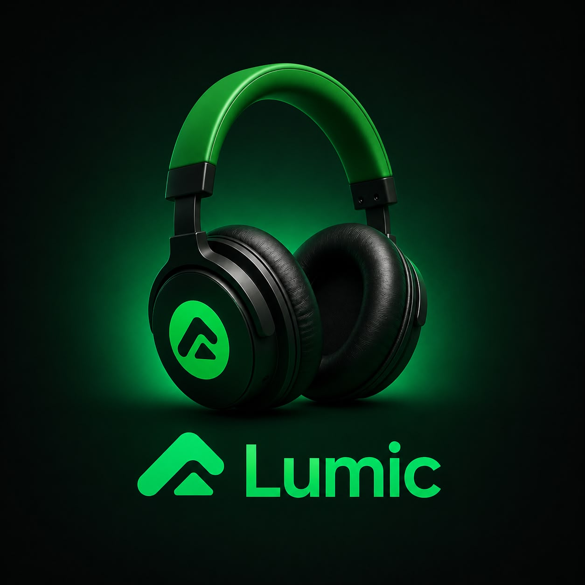

Your music,
everywhere you go.
lumic is a streaming app built around one idea: your favorite songs shouldn't stop when your signal does. Download tracks to your phone, share playlists with friends in seconds, and take your whole library offline — no buffering, no interruptions, no excuses.
A streaming platform made for people who live with headphones in.
lumic started with a simple frustration: great music apps punish you the second you go offline. So we built one that doesn't. Stream millions of tracks when you're online, download them in one tap when you're not, and keep listening on the train, on a flight, or wherever your signal disappears. It's the same idea Spotify made popular — just tuned for people who share more, save more, and pay less.

Everything you'd expect. A few things you wouldn't.
Offline downloads
Save any song, album, or playlist to your device and play it with zero data and zero interruptions.
Share songs & playlists
Send a track or a full playlist to a friend in one tap, straight from the player — no copy-pasting links.
Unlock premium your way
Pay a one-time ₦300, or skip the payment entirely by referring 3 friends who install lumic. Either path removes the ads for good.
Made-for-you playlists
Daily mixes and radio stations that actually learn your taste, instead of repeating the same 20 songs.
High-fidelity audio
Switch between data-saver and studio-quality streaming depending on your connection and your mood.
Synced across devices
Pause on your phone, pick up on any other device, exactly where you left off — playlists included.
Real-time lyrics
Follow along line by line, or jump straight to your favorite part of the song by tapping a lyric.
₦300, or 3 friends. Your call.
lumic is free to use with ads. To unlock ad-free premium, either pay a one-time ₦300, or refer 3 friends who download and install the app — no card required. Share the app the same way you'd share a song, and premium unlocks automatically once your 3rd friend joins.
Add lumic to your Home Screen
lumic isn't on the App Store yet — instead, it installs straight from Safari as a full app icon on your Home Screen. Once it's added, it opens full-screen, works offline, and feels exactly like a native app — no App Store, no waiting on review.
- 1Open this page in Safari. Add to Home Screen only works from Safari — not Chrome, and not an app's built-in browser.
- 2Tap the Share icon . On iPhone it's in the bottom toolbar; on iPad it's at the top, next to the address bar.
- 3Scroll down the share menu and tap Add to Home Screen. If you don't see it, tap Edit Actions at the bottom and add it.
- 4Confirm the name reads lumic, then tap Add in the top-right corner.
- 5Find the lumic icon on your Home Screen and tap it to open — you're in, no App Store required.
Direct download, no store required
Tap download, open the file once it finishes, and allow installs from this browser if your phone asks. Takes less than a minute.